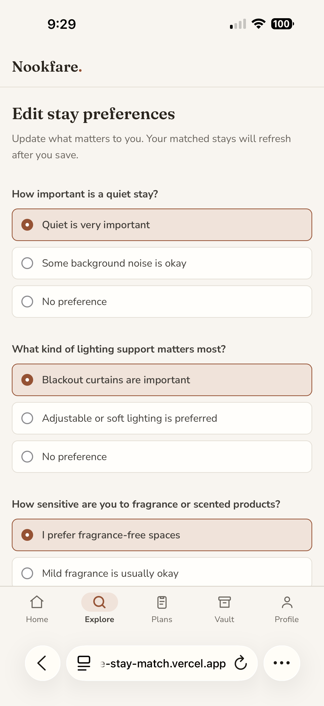
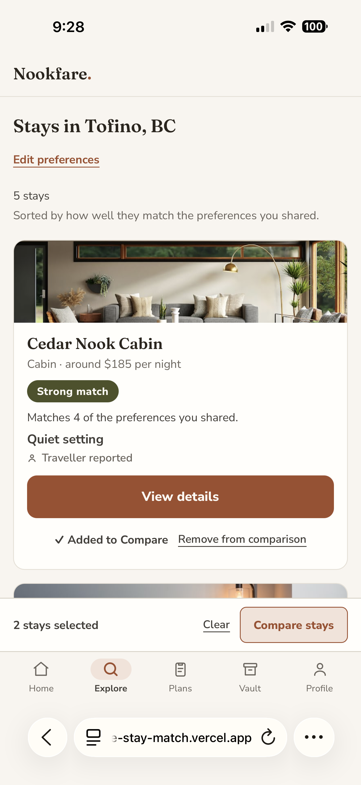
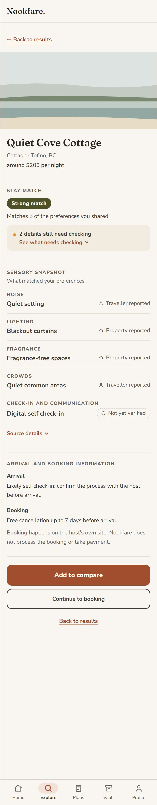
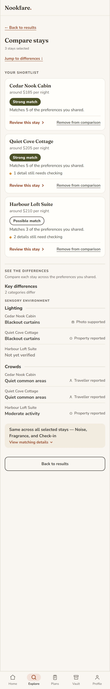
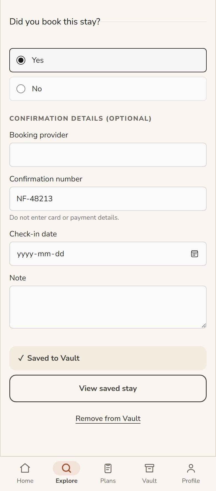

Experience design, interaction design and front-end implementation
Nookfare.
Compare properties by the sensory details that decide whether a stay works for you.
Nookfare is a self-directed concept and working prototype: a travel-comparison tool that ranks properties by noise, light, fragrance and arrival details, using preferences the traveller sets themselves. Each match carries its reason, and anything unverified stays marked as still needing a check.
It grew out of a question from my practice in cognitive accessibility, informed by lived experience of neurodivergence: what would a booking tool look like if it were designed for the moment a traveller has the least attention to spare?
A self-directed concept project: I led the research, interaction design and front-end prototyping, taking it through an interactive prototype and two rounds of usability testing.
01 The problem
Booking sites make the decision feel urgent before the details are clear.
"Only three days left to save." "You have points to spend." Messages like these manufacture pressure to decide quickly. At the same time, star ratings flatten very different experiences into a single average, and the details that actually determine whether a stay will work (street noise, lighting, room scent, the check-in process) are left for the traveller to dig out of the reviews.
For travellers overwhelmed by too many choices or exhausted from making decisions, searching for and comparing options can be draining. They might feel pressured to book before they gather enough details to be confident in their choice.
Nookfare puts the deciding details into the comparison itself. Before any results appear, the traveller sets their sensory preferences. Each result then explains its match, and anything uncertain is flagged for confirmation. Booking itself happens on the property's own site, a deliberate handoff, not a hidden one.
02 Principles
Five rules that shaped the prototype.
-
1
Preferences come before properties
Before showing any details about properties, Nookfare asks travellers a single question about each of their sensory preferences. Later, every match in the process connects back to these answers, so travellers can easily understand what their match is based on.
-
2
Every match includes its reason
A match is shown with a clear explanation, such as "Matches 5 of the preferences you shared." The traveller can see why a property received that result without interpreting a percentage or relying on a star rating.
-
3
Unconfirmed details stay visible
Anything not yet verified sits under "What still needs checking," alongside the confirmed information rather than hidden beneath it. The traveller can see what is missing before deciding, not after.
-
4
Comparison starts with the differences
Where properties share the same detail, those sections collapse into one. Only what differs stays surfaced, less repeated reading, with attention kept on the choices that actually vary.
-
5
Saving and booking are separate decisions
Saving a property adds it to the traveller's Vault. Booking is a separate step, handled on the property's external site, with the handoff explained on screen.
03 The flow
From setting preferences to saving a property.
-
Set sensory preferencesNoise, light, fragrance and crowds
-
Explore resultsRanked by match band, each with its reason
-
Property detailVerified details beside what still needs checking
-
Compare staysShared details collapse, differences stay open
-
Selected staySaving and booking are tracked separately
-
Save to VaultSaved statusView or remove at any time
-
Book on the host's siteLeaves Nookfare. No payment is taken hereDid you book this stay?Yes or No, recorded on the Selected Stay screenPlansConfirmed bookings. Not built yet
-

Setting up
Preferences determine how properties are ranked
Before any properties appear, Nookfare asks about sensitivity to noise, light, fragrance and crowds. Those answers rank the results and can be changed at any time.
- Each preference is one question with simple written choices
- Preferences stay on the device; results refresh when they change

Discovery
Each result shows why it ranks where it does
Every property card shows its matching band, how many preferences it shares, and the source of that information. Part of the next card stays visible, so it is clear the list continues.
- The explanation and source are tied to the match result
- The comparison tray sits beneath the property actions

Evaluation
Details that still need checking stay visible
The property page shows verified details next to those still needing confirmation. One section counts what is outstanding and links straight to it. In the Sensory Snapshot, every detail is paired with its source.
- Unconfirmed details are easy to find without pulling focus from the rest of the page
- The external booking handoff is explained before the traveller leaves Nookfare

Decision
The comparison starts with the differences
Everything shared across properties collapses into one section. The distinct details stay open under Sensory environment and Arrival and communication, keeping attention on what could actually change the decision.
- The differing categories sit at the top
- Each property keeps its own match result, the final choice stays with the traveller

Commitment
Saving keeps a property for later
Before saving, the screen shows one action, Save to Vault. Once saved, that action becomes a saved status with options to view or remove it. The booking question is handled separately from the saved status.
- Remove from Vault is a secondary action
- Changing the booking status never affects whether the property stays in the Vault
04 The system
A warm, editorial palette built for calm reading, and one interaction colour.
Display: Fraunces
How might this stay feel?
Interface: Nunito Sans
Matches 5 of the preferences you shared. Traveller reported.
Terracotta always signals an available action: buttons, links, selection controls and keyboard focus. Match quality is carried by three labelled bands, Strong, Possible and Lower.
Every colour pair meets WCAG AA (several reach AAA); all touch targets clear 44px; focus is always visible; the interface holds up cleanly at 200% text zoom and down to a 360px screen.
05 Fixing the saved state
The decision I am proudest of in this project, because it came from a testing failure rather than a plan.
During testing, the Selected Stay screen showed Save to Vault and View in Vault at the same time, including for properties that had never been saved.
The cause was a state-modelling mistake. The screen treated the existence of a property record as proof the traveller had saved it. But that record is created earlier, the moment a property is reviewed, so its presence could not tell saving apart from simply having looked. The interface was confusing "the system has seen this" with "the traveller chose this."
Before
The screen checked whether a property record existed. Because every reviewed property already had one, saved and unsaved properties showed the same actions.
After
I added a savedToVault flag that changes only when the traveller actively saves or removes a property, and drove the screen from that instead. A second round of testing surfaced one more issue, a confirmation message that redundantly repeated the saved status, which I removed.
The fix was a few lines. The lesson was the useful part: an interface should reflect what the person decided, not what the system happened to record.
06 Try it
The prototype is live, five screens carry the finished system.
Built
- Preferences
- Explore Results
- Property Detail
- Compare Stays
- Selected Stay / Vault
Planned
- Onboarding
- Home · Plans · Profile
07 Feedback
If you spent time in the prototype, I would like to hear what happened.
Anything is useful: what you were trying to do, where you hesitated, a label that read the wrong way, a screen that asked for more attention than it needed. Rough notes are welcome, nothing needs to be tidy.
Notes on this page
Built in React, TypeScript and Tailwind, with Claude Code and Codex assisting on the front-end (AI use and attribution). The site runs on the Plum & Linen design system, audited to WCAG AA contrast.
Property data shown throughout is a fictional sample set for Tofino, BC, built for prototype testing, not a real listing. Booking always happens on the host's own site; Nookfare never processes payment or confirms availability.